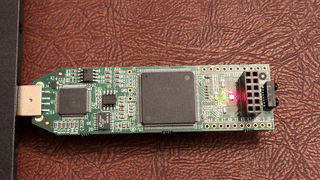

Hello World on the iCEstick
The iCEstick FPGA board
I’m using an iCEstick dev kit, which is a USB dev board for the iCE40 FPGA chip. You can nab one for around USD $25-$30 at the time of this article’s writing, so they’re pretty affordable if you’re looking to start tinkering with FPGAs.
Open-Source toolchain
More powerful FPGAs often have tools that can do a lot for you … if you like wading through a sea of large GUI interfaces. Also, the backend tooling tends to range from “meh” to “oh god, what a raging trash fire!”.
It varies from vendor to vendor.
The iCE40 is unusual in that it’s so small, some wonderfully crazy folks decided to reverse-engineer its bitstream format. (Bitstreams are basically the “executable” format for FPGAs. They tell the chip how to wire up its internal logic gates, DSPs, memory blocks, etc.)
The result is a project called IceStorm, which helped get support for the iCE40 into several open-source synthesis tools, allowing for a workflow delightfully free of GUIs.
How to get set up
Udev rule for the iCEstick
Copying straight from the IceStorm page:
Create a file
/etc/udev/rules.d/53-lattice-ftdi.ruleswith the following line in it to allow uploading bit-streams to a Lattice iCEstick and/or a Lattice iCE40-HX8K Breakout Board as unprivileged user:ATTRS{idVendor}==“0403”, ATTRS{idProduct}==“6010”, MODE=“0660”, GROUP=“plugdev”, TAG+=“uaccess”
Setup script
Installing all of the tools can be mildly intimidating, but for Ubuntu-based systems, this script automates most of the setup process:
#!/bin/bash
# Reference: http://www.clifford.at/icestorm/
# Note: This script is directly pulled from the IceStorm setup instructions
# for Ubuntu.
# Install build dependencies.
sudo apt-get install -y build-essential clang bison flex libreadline-dev \
gawk tcl-dev libffi-dev git mercurial graphviz \
xdot pkg-config python python3 libftdi-dev \
qt5-default python3-dev libboost-all-dev cmake
# Build folder for the tools.
mkdir -p ice40-toolchain
pushd ice40-toolchain
# IceStorm tools. (Board support stuff)
git clone https://github.com/cliffordwolf/icestorm.git icestorm
pushd icestorm
make -j$(nproc)
sudo make install
popd
# Arachne-PNR. (Deprecated PNR tool, but has excellent iCE40 support)
git clone https://github.com/cseed/arachne-pnr.git arachne-pnr
pushd arachne-pnr
make -j$(nproc)
sudo make install
popd
# Yosys. (Verilog compiler)
git clone https://github.com/cliffordwolf/yosys.git yosys
pushd yosys
make -j$(nproc)
sudo make install
popd
popdAfter running that script, you should have yosys, arachne-pnr, and icepack/iceprog/icetime in your executable PATH.
The Hello World
The rotating LED blink example from arachne-pnr is the “Hello World” program recommended by the icestorm folks.
Assuming you followed the setup instructions from earlier, you should be able to run:
make rot.bin
iceprog rot.binIf programming was successful, your board should have a blinking pattern like in the GIF shown below:
